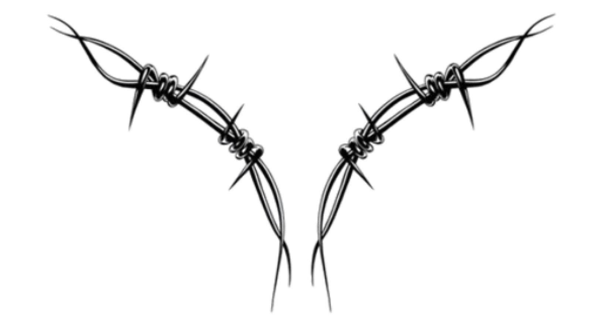
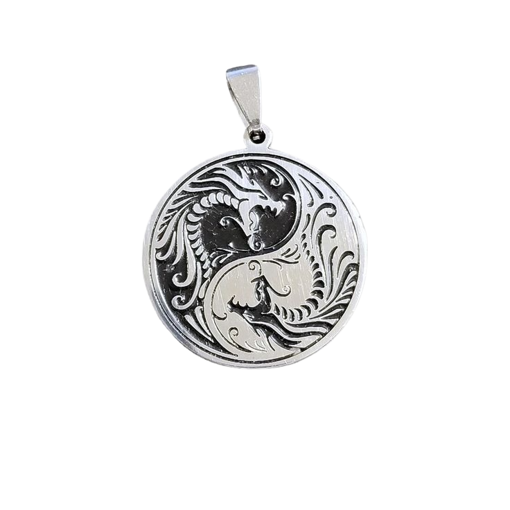

Randvi Meridius.
Our firstborn.
I tend to imagine that our first child will be a girl and we
can call her Randvi as a nickname. I got that name from AC Valhalla
and I remember in our conversation we were to choose between Randvi and Kassandra.
Randvi rolls off the tongue better I think.
I found Randvi off a shop in Denmark on 30 November 2022 and I felt
that I wanted to get you a belated birthday gift.
I sure did think about you a lot back in the day.
Well, it hasn't changed, but for a guy in denial I was doing a lousy job showing it.
Her birthday is coming up too, and every time I think of her I think of you too.

VALHALLA
How does it feel, Tehani, my dearest,
that, akin to the skies above
Your skin teems with manifold constellations
patterns gingerly depicted in symmetry and allure
tattoos of fire?
How does it feel,
that, akin to the stars out in the void,
the world looks up to you
composes a psalm of gratitude and reverence
and bows low to your brilliance?
I am at a loss for words
I look back onto the depictions of old
and I see you just as clearly as I have always been blessed to
beyond my hiatus, I take to the glowing canvas of your skin
and I revel in the glamour and the wonder
and the childlike marvel that consumes me whole
and I refuse to let it go
I am grateful for the archive of words
that I have put up over the years
and I can recite them incessantly
if it were up to me
you'd be a deity in the flesh

Today, in celebratory fashion
I join the universe that orbits your brilliance
and we all stop to peer
and we perceive that
over all creation none resembles the deep dazzling void of space
as you do
and I can, in full confidence
concede that even in quantum superposition
look upon you and your glamour will never drop a shade.
look at you
miniature galaxies gyrate gleefully within the captivating contours
of your eyes
harbingers of doom
and just as the archives of my opus reveal,
they reveal too, and they bring forth the prophecy of our doom
and I embrace it in its fullness
but for now, we raise a toast
and we feast in all manner to another year
of the colourful warmth that you radiate
at least, I imagine,
to all that exists

TEHANI
OSUN
MILAN
MERIDIUS